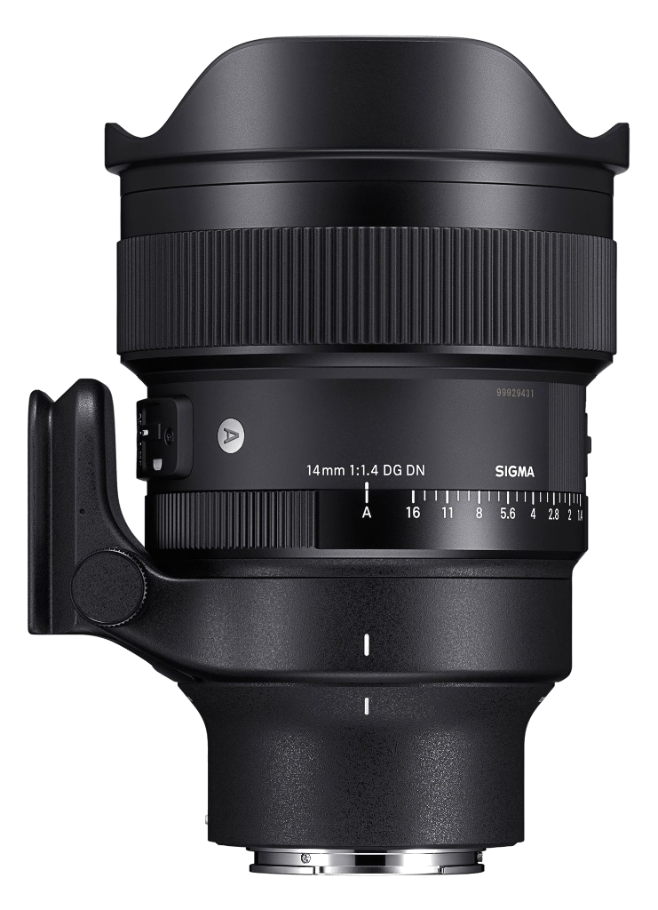

Clicca per l'Articolo ↗
SIGMA ART SERIES
Sigma 14mm F1.4 DG DN Art (Ambassador)
Dopo tre anni di utilizzo continuo, posso dire che il Sigma 14mm F1.4 Art è l'obiettivo che ha cambiato il mio modo di fotografare. Scelto per raccogliere la massima luce possibile in astrofotografia ambientata, offre una nitidezza straordinaria da centro a bordo già a f/1.4 con un coma ben controllato. La resa della sunstar a f/11 è estremamente pulita ed il collare Arca Swiss integrato è un vantaggio concreto nelle panoramiche notturne.
Leggi la Recensione →